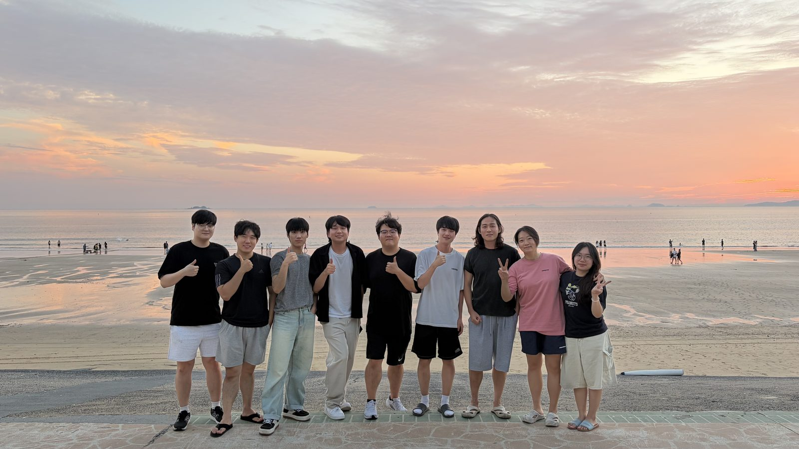
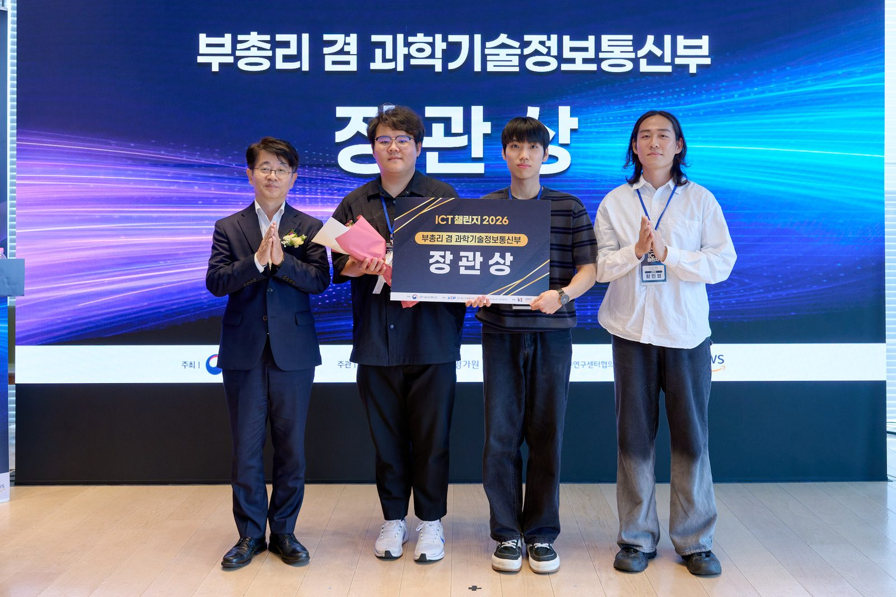

About
I am a graduate student in the School of Electrical Engineering at KAIST, working with Prof. Hyuncheol Park at LIT Lab. My research focuses on resource allocation for Integrated Sensing and Communication (ISAC) systems, where communication and radar sensing share spectrum, hardware, and waveforms.
News
2025.08
Graduated from KAIST with a B.S. in Electrical Engineering, Summa Cum Laude.
2025.08
Started the Integrated M.S.–Ph.D. program at LIT Lab, KAIST.
2026.08
Received the Minister of Science and ICT Award at ICT Challenge 2026 (Team 선제통감).
Education
2018.03 — 2020.02
Bugil Academy
Cheonan, Korea
2021.03 — 2025.08
KAIST
B.S. in Electrical Engineering
Minor in Materials Science and Engineering
GPA 4.19 / 4.3 · Summa Cum Laude
2025.08 — Present
KAIST
Integrated M.S.–Ph.D. in Electrical Engineering
Advisor: Prof. Hyuncheol Park, LIT Lab
Research Interests
- Resource allocation for ISAC systems
Honors & Awards
-
KAIST Presidential Fellowship (KPF)
2021.03KAIST
-
Summa Cum Laude
2025.08KAIST, B.S. in Electrical Engineering
-
Minister of Science and ICT Award — ICT Challenge 2026
2026.08Team 선제통감 · 6G V2X digital twin validation platform
Experience
2022.06 — 2022.08
UC Berkeley Summer Session
Berkeley, CA
2024.09 — 2025.06
Undergraduate Individual Research
LIT Lab, KAIST
Topic: OFDM Radar
Skills
Life

